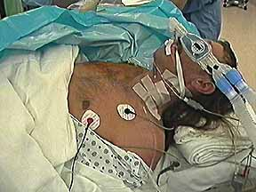

|
 Infraclavicular block can be performed with the arm in any position. In this case, the block is performed with the patient after induction of general anethesia while the surgeons are prepping, draping, and placing a tourniquet on the right upper extremity. |